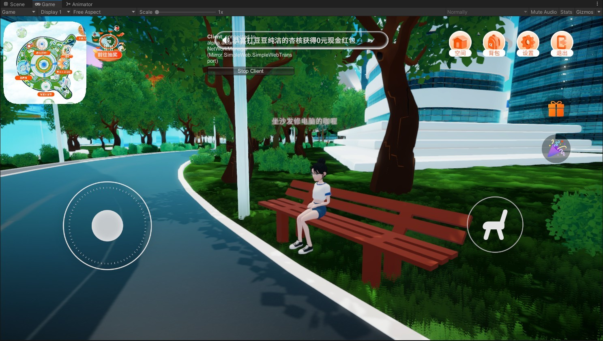

Shepherd Zhu
AKA Shepherd0619
IT 工程师 🧑💻 | 终端管理与身份安全 | 自动化与 IaC 🌟
以结果为导向的 IT 工程师，专注于 Endpoint（Intune / Autopilot / macOS）+ Identity（Entra ID / SSO）+ 自动化与 IaC（Terraform / TypeScript / PowerShell）。
Microsoft Certified
Enterprise Administrator Expert
关于我
我叫 Shepherd
目标岗位：IT Engineer / Endpoint Engineer / IT Operations（可胜任带小团队的 IT Lead / Manager 方向）
毕业于黑龙江大学，专业为商务英语专业。大学期间自修计算机科学与技术 本科二学历，毕业于哈尔滨工程大学
核心优势：将重复性 IT 工作产品化，把工单痛点转化为自动化工作流与工具；将系统配置工程化，用 IaC 管控 SaaS 与基础设施；跨团队协作，面向业务团队输出清晰、尽量无术语的资产与处置建议。
生日 : 2002年6月19日
网站 : shepherd0619.github.io
电子邮件: shepherd0619@outlook.com
最高学历 : 本科学士
现居城市 : 北京
求职状态 : 在职
工作单位 : RightCapital
证书奖项 : 微软Microsoft 365 Administrator Expert、英语专业四级和八级、英语六级（559分）、商务英语专业四级和八级、校三等奖学金、省级大创训练项目结项两次
博客 : Shepherd Zhu-CSDN博客
教育经历
2020.09.15 - 2024.06.25
黑龙江大学 商务英语专业
主修课程：国际贸易实务、国际商务谈判、国际商务合同、商务英语视听说等
平均绩点：8.4/10
获校三等奖学金一次；主持省级大创训练项目两次并已结项
2020.10.01 - 2024.06.25
哈尔滨工程大学 计算机科学与技术专业
此为黑龙江大学统招本科在校期间成人自考的外校专业。
主修课程：数据结构、操作系统、软件工程、数据库系统、操作系统原理
无挂科
工作经历
2025.05 - 至今
RightCapital Inc. - Information Technology Engineer
目前在职。在现任公司已建立起完善的 IT 基础设施与信任体系；现阶段期望向更大型、技术生态更丰富的平台纵深发展，通过应对更复杂的企业级架构与团队协作挑战，实现下一次职业能力的跃升。
IT 工程（终端 / 身份 / 自动化）：
• 将混合环境与 SaaS 配置工程化、可追溯：以 IaC 方式管理 on-premise 与云端资源，并为团队补齐 Intune 相关 Terraform resource 与 state management（Terraform, Intune）
• 将零散自动化整合为事件驱动工作流：把 Pipedream 上分散流程迁移到 Inngest，提高自动化的可维护性与执行效率（TypeScript, Inngest）
• 配置 GitLab CI Runner，加入 Claude Code CLI。根据业务的 SOP，在 IT 的代码库编写 Agent Skill，实现 Webhook 触发 AI 跑自动化
• 为公司的 AI Chat 项目制作微软相关的 Intune Data Connector，打造用户的 Helpdesk bot。在跨国支持情景下，AI 可以根据 Intune Admin Center 的 Graph API 结果进行 L1 troubleshooting，提高服务满意度并帮助 IT 快速跳入 issue 的上下文
• 构建统一资产视图以支持业务决策：开发资产管理 Dashboard，整合中美两地 Excel 资产表，并定期从 Intune 与 ABM 同步校准 owner 数据；在离职场景向业务输出清晰的设备清单与处置建议，支持远程锁定与擦除（Next.js, Intune, ABM）
• 建立现代终端与身份体系：维护 Entra ID 与 Intune 策略落地，按 CN / US 两地办公需求调校，实现 macOS zero-touch baseline deployment，并提供 SSO / SAML / MSAL 与终端支持（Entra ID, Intune, macOS）
• 提升研发协作效率：维护 Jira Cloud 工单体系，并通过 Trigger + Webhook 与 GitLab 等系统联动，为研发同事提供稳定的流程与技术支持（Jira, Webhook, GitLab）
• 保障邮件与终端安全：巡检 Exchange 与 Defender，复盘可疑邮件并用脚本完成查询与处置（Exchange, Defender, PowerShell）
网络 / 跨区域运维：
• 强化办公网络安全与可用性：基于 Entra Domain Services 与 Windows Server NPS 建设 WPA3-Enterprise 无线认证体系（Entra DS, NPS）
• 维护办公网络与设备：维护 UniFi 交换机与 AP，并按业务需求设计 QoS 策略（UniFi）
• 支持跨区域现场运维：每年赴美国康州进行现场 QA 和网络设备升级维护（On-site support）
• 维护企业的软路由设备和国际互联网专线，使用 PVE、Windows Server 的 RRAS、Clash 解决方案实现国内外流量分流，在节省企业跨境网络开支的前提下，最大程度保证中国职工的上云体验
2024.07 - 2025.04
上海微创软件有限公司 - Intune Support Escalation Engineer
因美国总统拜登签署的第14117号行政命令，保护美国公民的敏感个人和政府相关数据免受外国敌对势力的侵害，微软支持项目于 2025 年 4 月终止和解散。
主要职责：
• 为 Intune 故障排除和咨询提供技术支持，主要面向亚太地区 Premier 服务合同的政府和企业客户
• 为越南河内和胡志明市的供应商举办技术支持培训，提升其能力
• 为微创团队内部设置 Triage，解答技术疑难杂症，并在必要时 takeover 兜底
• 设置和管理 AD 域控制环境和证书管理环境
• 将 AD 环境与 Entra ID 和 Intune 集成
• 设置 SCCM / MCM 环境以及配置端点保护、磁盘加密和合规性等的 workload
• 设置 Microsoft Defender for Endpoint，并使用 GPO、SCCM 或 Intune 将设备注册挂载
• 设置 Microsoft Tunnel、OpenVPN 和 RemoteAccess 以实现网络加密和保护
• 熟悉 CIS 基准迁移到 Intune 流程
• 熟悉 EPM（又称端点权限管理），用于管理本地管理员权限提升
• 操作 Microsoft Deployment Tool、Task Sequence 和 Autopilot 以部署全新 PC
• 操作 Apple Business Manager 和 Configurator 以批量注册 iOS / macOS 设备
主要客户：亚洲基础设施投资银行（AIIB）、昆士兰州警察局、西澳大利亚州警察局、澳大利亚能源公司、DXC 科技公司
额外职责：
• 使用 C# 开发内部故障排除工具，并与 Copilot Studio 交互进行智能分析
2023.07 - 2024.06
爱化身科技（北京） - Unity开发工程师
此为实习，因公司经营战略调整，外包项目解散。
主要职责：
• 主要负责 Unity 开发和 C# 后端，并与 Java 和 Python 开发人员合作
• 将二进制数据应用于动漫角色骨架，使用 Animancer 进行实时动画 blend，并使用 AVPro 进行离线渲染
• 封装无头渲染服务到 Docker 镜像
• 开发数字人渲染平台，将文本转换为带有用户提供背景的数字人形
• 使用 Java 后端实现 MP4 视频生成，以管理任务序列并公开 API 接口
• 开发咪咕音乐的数字人渲染服务，用于制作动漫视频铃声
• 使用 Unity 和 Java 后端实现角色合成和 MP4 视频生成
• 与上海银行联合开发金融元宇宙基础设施
• 参展进博会和鸟巢，展示贵金属交易和汽车销售，并提供在线视听体验
• 开发镜像服务器和客户端，使用 NetworkTeam 组件配置播放器可见性
• 为林丹和爱化身科技联合开发抖音数字人直播项目
• 使用 SALSA 组件实现唇形同步、OBS 推流以及音网和配音端的联调
主要客户：中国移动苏州研究院、上海银行、百信银行、中信银行
项目经历
2026.05 - 至今
SmtpRelay
使用 ASP.NET 开发，作为一个企业内部发件的中间件，解决 Exchange Online 不支持 SMTP Auth，导致部分自建服务不能通过邮件发送通知的问题，同时也提供 Webhook 事件给下游做自动化。
2026.03 - 至今
Microsoft Defender 终端安全
铺设 Microsoft Defender for Endpoint 基础设施，为美国办公室提供：
1. 云上应用的数据合规保障（Slack 企业即时聊天软件的信息审查）
2. 设备侧网络流量深度分析（监视和留存员工的 AI 互动）
3. 邮件和云盘的敏感度标签
4. 文件防毒和网络防黑
5. 事故自动处理和升级
能够准确还原一次事故的时间线和背景故事，让一线 IT 人员能够快速进入上下文。
2026.02 - 至今
Entra Radius
该项目使用 ASP.NET 开发，作为 FreeRADIUS 的一个模块工作，实现员工使用微软账号密码验证上网的需求。
2025.10 - 至今
Platform Workflows
1. 根据 IT 和业务团队需要开发入离职、RingCentral VoIP、Google Workspace 相关的自动化
2. 与 GitLab Pipeline 结合，完成 MR 的创建、合并和 assignment。业务只需在 Jira 填写表格，自动化程序可操作 GitLab 和 Terraform 完成账号增删改
2025.10 - 2025.11
IT Device Inventory App
该项目使用 Next.js 开发的单页程序，主要解决：
1. 中美两地办公室各自维护的零碎 Excel 资产表的数据结构统一
2. 定期从 Intune 和 ABM 上游拉数据，修正错误的人工维护
3. 当员工发生离职时，美国业务团队可以清晰了解应对哪些设备远程锁定和擦除
2024.12 - 2025.04
Autopilot Helper
1. 开源 troubleshooting 工具，围绕 Windows Autopilot 和 MDM 日志衍生的分析和整理
2. 使用 C# 修复和重构原有 PowerShell 脚本并增加可视化报告，同时接入 LLM 分析 Event Viewer 日志，有效提高支持效率，得到了同事、团队领导的认可和欢迎
3. GitHub: Shepherd0619/IntunePremier
2024.03 - 2024.06
Unity Lagoon打包机器人
1. 该项目为本人的开源项目之一，依托于微软依赖注入和 ASP.NET Core 技术，运行于 Discord 社群软件，与社群服务器建立 WebSocket 心跳连接，实现 Command 消息切换分支、打热更新、打独立客户端等 DevOps 操作
2. GitHub: Shepherd0619/UnityBuilderDiscordBot
2024.03 - 2024.06
咪咕音乐/视讯 数字人
1. 该项目为数字人渲染服务，依托咪咕音乐版权资源，使用 Python、Java 和 Unity 三者联调的方式实现 AIGC 实时生成二次元视频彩铃
2. 该项目我主要负责 Unity 侧和 C# 后端侧开发，与 Java 和 Python 后端配合，将下发的二进制数据应用到动漫人物骨架节点，使用 Animancer 脚本做运行时动画状态机，使用 AVPro 作为离线渲染组件，最终打包成无头渲染客户端交付
2023.12 - 2024.06
中移苏州研究院数字人
1. 该项目为数字人渲染平台，将文字转换为数字人口型，并将用户提供的素材作为背景，同时用户也可定义人物资产，最终合成为 MP4 视频
2. 该项目我主要负责 Unity 侧开发，与 Java 后端配合。将 Java 下发的任务落实到 MP4 文件最终上报并暴露 API 接口
2023.09 - 2024.06
上海银行元宇宙
1. 该项目为上海银行金融元宇宙基础设施。在进博会和鸟巢展出。主要将贵金属交易、汽车销售等业务以线上次世代视听体验呈现
2. 该项目中，我主要负责 Mirror 网络传输层开发、捏脸系统改造
3. 前端侧我主要基于 SimpleWebTransport 进行改造，同时改造 Server 和 Client 侧，制定协议号，实现频道过滤和分服
4. 后端侧配置 Nginx，Unity 无头端通过改造的 Transport 脚本的回调上报至调度中心，实现负载均衡
5. 该项目中我也负责 Addressable 和华佗热更，针对向下兼容低端机要求，对换装资源进行内存颗粒化管理
6. 因使用的是 WebSocket 协议，使用 Protobuf 替掉 JSON 进行序列化 / 反序列化以提高效率
2023.09 - 2023.10
林丹数字人直播
1. 该项目为运动员林丹和爱化身科技共同发起制作，已于抖音平台上线运营
2. 使用 SALSA 组件驱动人物模型骨骼 Blendshape 以实现口型同步、OBS 串流等。同时也负责声网和 Dubbing 侧联调。实现语音输入变声，为数字人直播提供技术支持
2023.07 - 2023.10
百信银行数字营业厅
1. 该项目由百度和中信银行联合发起，主要把金融理财业务以线上游戏形式展现
2. 该项目中，我主要负责 Mirror 服务端和客户端。通过改造 NetworkTeam 组件并与 Java 后端联调，实现后端可配置玩家可见性以适应世界大厅分服、个人空间分组等需求，最终促成"摸鱼行动"大版本上线
技能
终端管理与安全
Microsoft Intune、Entra ID、SCCM / MCM、Defender for Endpoint、Autopilot、Apple Business Manager。熟悉零接触部署、CIS 基准、EPM 权限管理、证书管理等企业级终端安全解决方案。
基础设施即代码
Terraform 管控云资源和 SaaS 服务，实现基础设施工程化。为 Intune Terraform Provider 贡献 resource 和 state management 代码。
自动化与DevOps
TypeScript、Inngest、Pipedream 事件驱动自动化。GitLab CI / CD Pipeline、Jira Automation。Discord Bot 开发与 Unity 自动化打包。
Unity游戏开发
C# 全栈开发，Mirror 网络框架、Addressable 资源管理、HybridCLR 热更新。熟悉数字人渲染、元宇宙开发、WebSocket 通信、Protobuf 序列化等技术栈。
全栈Web开发
Next.js、ASP.NET Core、C# 后端开发。熟悉 MVC 架构、RESTful API 设计、微软依赖注入框架、Docker 容器化部署。
网络与云架构
Microsoft Azure、Google Cloud、Entra Domain Services、NPS、WPA3-Enterprise 无线网络。UniFi 网络设备管理、Nginx 负载均衡、VPN 与软路由配置、QoS 流量优化。
企业协作平台
Microsoft Exchange、PowerShell 脚本自动化、Jira Service Management、GitLab、RingCentral VoIP、Google Workspace 集成与管理。
英语专业能力
英语专业八级、商务英语专业八级。技术文档翻译、跨国团队沟通、SDL Trados 计算机辅助翻译工具使用经验。
专业认证
Microsoft Certified: 365 Administrator Expert。持有十年有效期美国 B1 商务签证，具备国际化工作能力。
博客
作品
.jpg)
上海银行元宇宙
.jpg)
上海银行元宇宙
.jpg)
上海银行元宇宙
.jpg)
上海银行元宇宙
.jpg)
上海银行元宇宙
.jpg)
上海银行元宇宙
.jpg)
上海银行元宇宙
.jpg)
上海银行元宇宙
.jpg)
上海银行元宇宙

百信银行数字营业厅 名片分享

百信银行数字营业厅 财富馆

百信银行数字营业厅 换装
